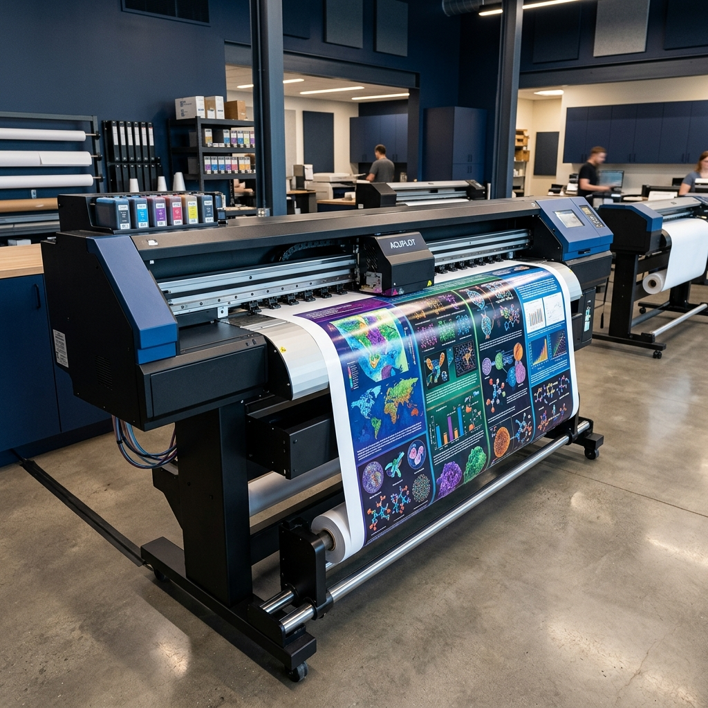

A1 / A2 대형 포스터 출력 전문
학술 발표부터 전시 포스터까지, 타협 없는 퀄리티의 대형 출력. 급한 주말에도 스캔데이에서 바로 뽑으세요.

어디서든 가깝게, 주말에도 확실하게
🚇 1정거장이면 충분한 접근성
지하철을 타면 청량리, 뚝섬, 서울숲에서도 5~10분 컷! 주변 동네에 대형 프린터가 없어도 당황하지 말고 왕십리로 오세요.
📅 주말 & 연중무휴 오픈
대학가 인쇄소가 모두 문을 닫는 주말, 급하게 포스터나 도면을 뽑아야 할 때 스캔데이는 든든하게 문이 열려 있습니다.
🖨️ 최고급 용지와 선명한 색감
일반 백상지부터 고급 인화지까지, 잉크 번짐 없는 고해상도 컬러 출력으로 중요한 학술 발표의 질을 높여드립니다.